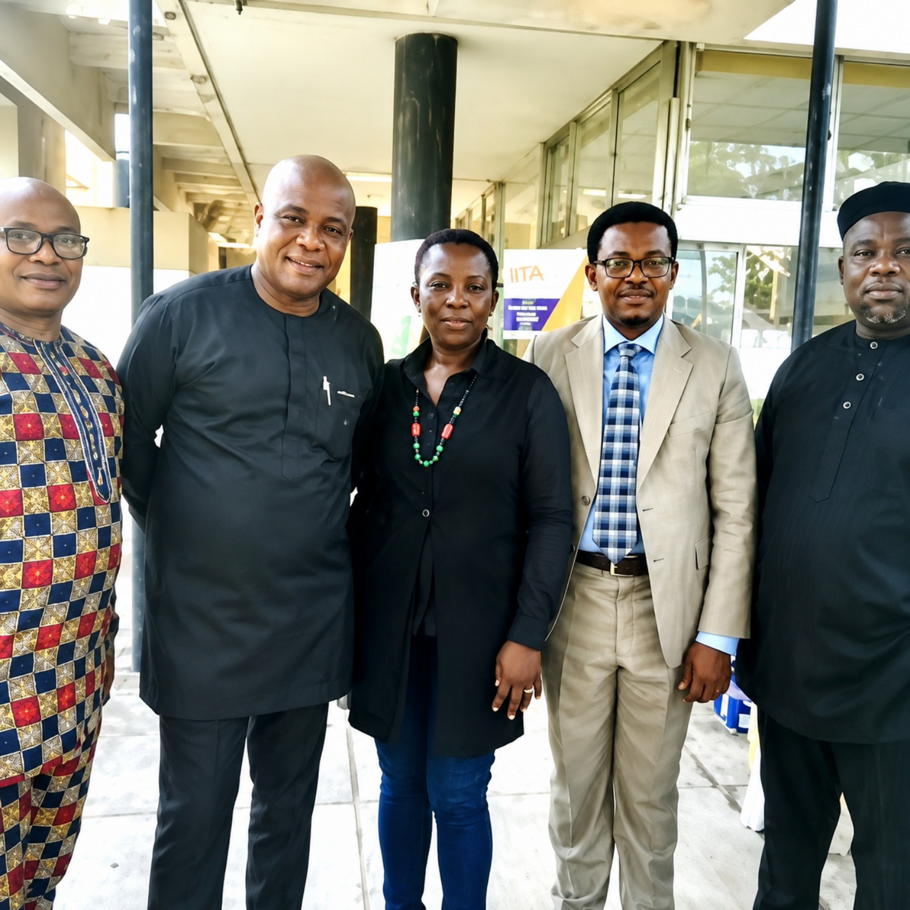
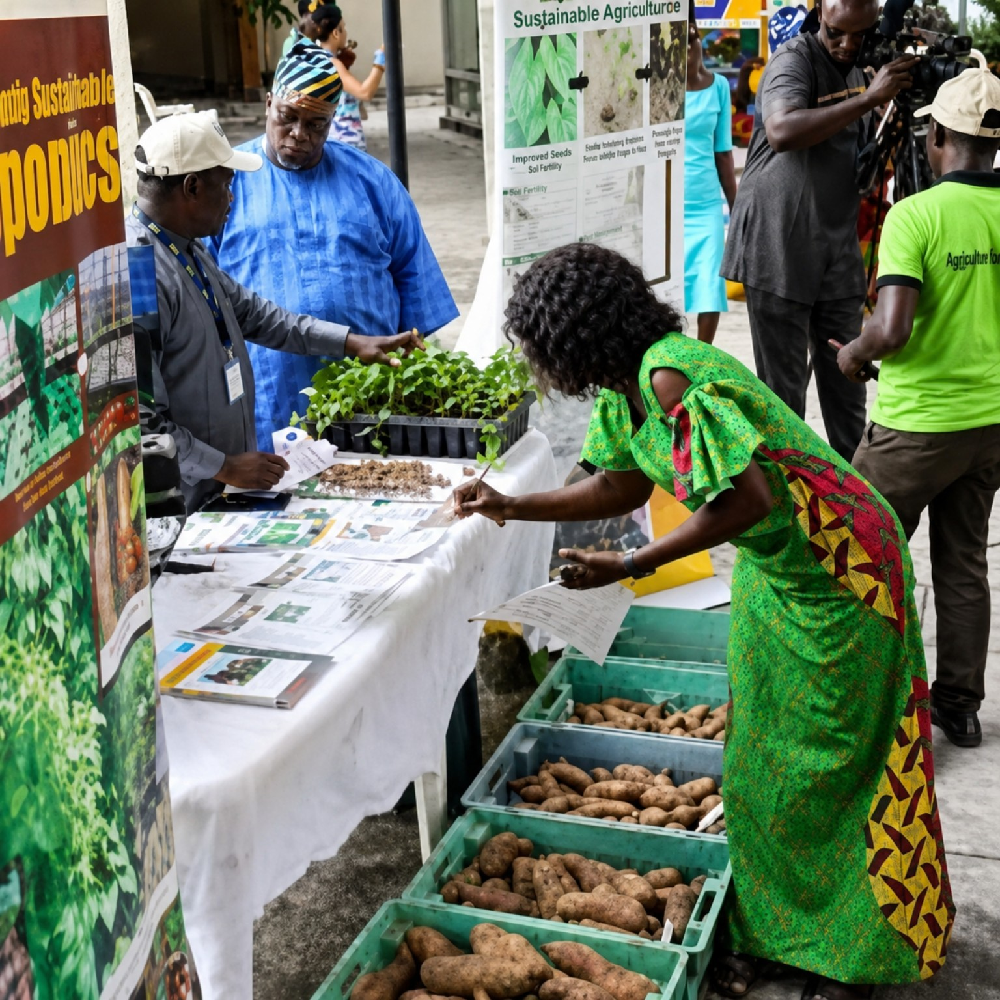

2020
Digital conference
The edition demonstrated the platform's ability to continue knowledge exchange beyond a physical conference setting.
From the maiden conference in 2019 through the digital edition in 2020 and into ICERIA 2027, this report brings together the people, ideas, institutions, images, media records and research-to-impact conversations that form the continuing ICERIA story.
ICERIA is more than a sequence of conference dates. Its documentary record shows an enduring concern with how agricultural research and innovation can move beyond institutions and become useful to farmers, enterprises, policymakers, investors and wider food-system stakeholders.
This report is designed as a living institutional record. It will be expanded as verified photographs, programmes, media reports, presentations, communiqués and future edition materials are added.

The inaugural ICERIA took place on 24 October 2019 at the Nigerian Institute of International Affairs in Victoria Island, Lagos.
The maiden edition brought together research institutions, government, the diplomatic community, private-sector stakeholders, farmers, associations, NGOs and other actors in agriculture.
Its programme included research presentations, expert dialogue and an innovation expo. The conference examined the challenge of translating agricultural research into practical use, including questions around commercialisation, funding, climate change, food security and access to farmers and markets.

The second edition continued the agricultural innovation and food-security conversation in a digital/virtual format.
The edition demonstrated the platform's ability to continue knowledge exchange beyond a physical conference setting.
The visual archive preserves participation from agricultural research and international development stakeholders.
The archive also preserves international agricultural dialogue and institutional participation.
The record repeatedly returns to the need for research outcomes to move beyond publication and demonstration toward practical use.
Innovation is treated as a bridge between knowledge, technology, enterprise and real-world agricultural needs.
Commercialisation connects validated ideas with enterprise, markets, investment and systems capable of supporting scale.
Adoption depends on relevance, access, demonstration, financing, institutional support and practical value for users.
The ICERIA archive preserves contributions from researchers, institutions, diplomatic representatives, development organisations, farmers, innovators, enterprise stakeholders and media.
The inaugural edition documented a broad agricultural ecosystem around research outcomes, innovation, commercialisation and food security.
The second edition preserved the platform's engagement with international agricultural research and development stakeholders.
The current edition is designed to connect research, innovation, validation, commercialisation, adoption, investment and impact.
Past participation and media coverage are retained as part of the institutional record and are not automatically presented as confirmed ICERIA 2027 partnerships.
ICERIA 2027 builds on the historical record while sharpening the platform's focus on the pathways that can move research outcomes and innovations toward commercialisation, adoption and impact.
Nigerian Institute of International Affairs (NIIA)
13/15 Kofo Abayomi Street, Victoria Island, Lagos, Nigeria.
Theme: CATALYSING COMMERCIALIZATION AND ADOPTION OF RESEARCH OUTCOMES AND INNOVATIONS FOR FOOD SUFFICIENCY AND ECONOMIC GROWTH OF AFRICA.
The documentary record is supported by materials already preserved in the ICERIA website repository.
The official conference communiqué is preserved in the resources archive.
Open the communiqué →Authentic photographs document the conference, exhibition, participants and research presentations.
Explore the gallery →Independent and institutional media records are preserved with source labels and historical context.
Explore News & Media →Conference presentations and knowledge materials are retained for future reference.
Explore resources →